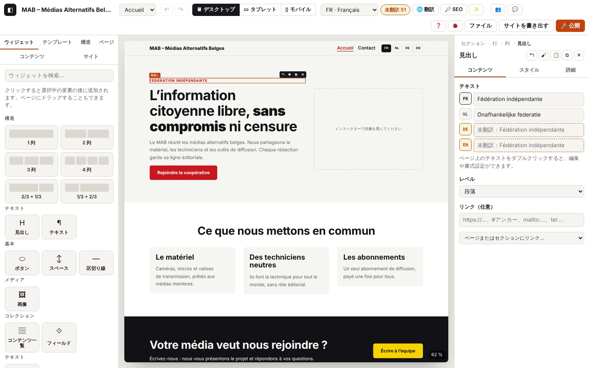

すべてのウィジェット

このページの内容
ウィジェットとは、ページを作る部品のことです。見出し、テキスト、画像、ボタン、地図などがあります。ウィジェットは列の中に置き、列は行の中に、行はセクションの中に並びます。この章では部品を 1 つずつ取り上げ、何に使うのか、どんなときに選ぶのか、それぞれの設定、そして公開サイト、スマートフォン、複数の言語でどう表示されるかを説明します。
例は、はじめてのサイトづくりで作る久万高原町の観光サイトから取っています。
はじめに：すべてのウィジェットに共通すること
ウィジェットを追加する
- 左パネルの ウィジェット タブで、ウィジェットをクリックします。選択中の要素のすぐ後ろに追加されます（何も選択していなければページの最後）。
- または、ページにドラッグします。青い線が落とす位置を示します。Esc でキャンセルできます。
- または、Ctrl+K を押して「追加：…」を選びます（例：「追加：ギャラリー」）。
- ウィジェットを検索… の欄に入力すると、一覧を絞り込めます。
ライブラリでは、ウィジェットが分類ごとに並んでいます：テキスト、基本、メディア、コンテンツ、コレクション、インタラクション、お問い合わせ、サイト。いちばん上の 構造 の分類では、あらかじめ列に分かれたセクションを追加できます：「1 列」「2 列」「3 列」「4 列」「2/3 + 1/3」「1/3 + 2/3」。
ウィジェットを設定する：インスペクター
ページの中でウィジェットをクリックすると、右側のインスペクターに設定が表示されます。上部にはパス（例：「セクション › 行 › 列 › 見出し」）があり、どの階層もクリックで選択できます。そのすぐ下に 5 つのボタンがあります：↰（親を選択）、🖌（スタイルをコピー）、📋（スタイルを貼り付け）、⧉（複製）、✕（削除）。
タブは 3 つです：
- コンテンツ：ウィジェットが伝える内容（テキスト、リンク、画像、リスト）。このあとウィジェットごとに説明するのは、このタブです。
- スタイル：見た目（下記参照）。
- 詳細：さらに細かい設定（下記参照）。
ページの中では、選択したウィジェットに小さなバーが付きます：↰（親）、✥（ドラッグして移動するためのハンドル）、⧉（複製）、✕（削除）。テキストをダブルクリックすると、ページの上で直接書き込めます。
多言語のテキスト
翻訳できるテキストの設定には、サイトの言語ごとに 1 行の入力欄があります（例：JA、EN、FR）。まずメイン言語を入力します。まだ入力していない行には色が付き、元のテキストとともに「未翻訳：…」と表示されます。公開サイトでは、翻訳していないテキストはメイン言語で表示されます。
いくつかの設定は翻訳しません。メールアドレス、価格、数字、住所、著者名など、どの言語でも同じものです。入力欄は 1 行だけです。ウィジェットごとに、どれがそれにあたるかを書いています。
すべての翻訳を 1 か所で行うには、画面上部の 🌐 翻訳 ボタンを使います（第 5 章を参照）。
リンクの指定
「リンク」の設定には、アドレスを直接入力できます：https://…（ほかのサイト）、mailto:…（メール）、tel:…（電話）、#ancre（ページ内の場所）。ページまたはセクションにリンク… のリストには、サイトのページと、開いているページのアンカーが並びます。できるだけこのリストから選んでください。ページのアドレスが変わっても、リンクが自動で追いかけます。
画像の指定
「画像」の設定では、画像を読み込む（パソコンの中のファイル：JPG、PNG、WebP、GIF、AVIF）か、インターネット上の画像のアドレス（https://…）を指定します。置き換え で画像を差し替え、外す で空にします。読み込んだ画像は、Atelier が WebP 形式に変換し、大きすぎる場合は縮小し、スマートフォン向けに軽いサイズも用意します（§4.13を参照）。
「スタイル」タブ
スタイル タブでは見た目を設定します。設定は 7 つのグループに分かれていて、その要素に関係のあるものだけが表示されます。
| グループ | 設定 |
|---|---|
| タイポグラフィ | フォント、サイズ、太さ（文字の線の太さ）、行の高さ、文字間隔、配置、大文字・小文字、スタイル（斜体）、テキストの色 |
| 背景 | 背景色、背景画像、画像のサイズ（覆う、収める、実寸）、画像の位置 |
| 余白 | 外側の余白（上、右、下、左）と内側の余白（枠と中身のあいだの空き） |
| 枠線 | 太さ、種類（実線、破線、点線）、色、角の丸み、影 |
| 寸法 | 幅、最大幅、最小の高さ |
| レイアウト | 要素の間隔、縦位置、配置の分配、列の幅（セクション、行、列の説明を参照） |
| 効果 | 不透明度、変形（マウスを重ねたとき：浮き上がる、拡大、縮小）、トランジションの時間、スクロールで表示（フェード、下から上へ、ズーム） |
知っておきたいこと：
- デバイスごと：タブの デスクトップ、タブレット、モバイル ボタン（または画面上部の 🖥 ▭ ▯）で、どのデバイスの設定をするかを選びます。デスクトップで設定したものは、タブレットとモバイルにもそのまま効きます。タブレットやモバイルで別の値にしたいときだけ、そちらで変更します。🖥▭▯ ボタンを押すと、3 つのデバイスを並べて見られます。
- ホバー：マウスを重ねたときに使われる設定です（色、枠線、影、変形、不透明度）。標準 で元の設定に戻ります。
- 値の入力：
24px、1.5rem、50%、autoのように入力します（数字だけならピクセルになります）。またはサイトの段階から選びます（文字の大きさは「段階…」、余白は「⇕」）。こうするとサイト全体の釣り合いが保たれます。↺ で引き継いだ値に戻ります。 - 色：丸い色見本はサイトのパレット（サイト パネル）の色です。自由な色よりも、こちらを選んでください。パレットを変えると、すべてが追従します。テキストの色と背景色の下には、コントラスト（読みやすさ）の目印が表示されます：緑の ✓ か、赤の ✗ です。
- 設定を検索 の欄で一覧を絞り込めます（「余白」「色」など）。
- コピー／貼り付け：ある要素のスタイルを、別の要素にそのまま移します。
- プリセット：名前を付けて保存し、使い回せるスタイルです（「メインボタン」など）。プリセットの一覧、+ プリセット、プリセットを編集、切り離す、「…の標準にする」があります（§3.7を参照）。
- スクロールで表示の動きは、対応しているブラウザーでだけ再生されます。また、端末で「動きを減らす」設定にしている訪問者には、一切再生されません。
「詳細」タブ
| 設定 | 役割 |
|---|---|
| アンカー（#アンカー リンク用） | 短い名前（acces）を付けます。ボタンやメニューから #acces で、この場所へ直接移動できるようになります。 |
| CSS クラス | CSS を書く人向け：要素にクラス名を加えます。 |
| アクセシブルなラベル | この領域に付ける名前で、表示中の言語でスクリーンリーダーが読み上げます（例：「車でのアクセス」）。 |
| 再利用 | このブロックからコンポーネントを作成：ブロックをすべてのページで使い回せるようにし、1 回直せばすべてに反映されます（§3.11）。 |
| 非表示にするデバイス | デスクトップ、タブレット、モバイル：そのデバイスでは要素を表示しません。エディターの中では、選択できるように半透明で表示されたままです。 |
| 非表示にする言語 | ある言語でだけ要素を隠します（メイン言語では隠せません）。一部の人にしか関係のない情報に便利です。 |
| カスタム CSS（上級者向け） | プロパティ: 値; の形の宣言を、要素に適用します。波かっこ、@、url() は使えません。 |
セクション
用途：ページを横に区切った大きな帯です（トップ、紹介、ギャラリーなど）。ページはセクションを縦に並べたもので、1 つのセクションには 1 つ以上の行が入ります。
使いどころ：ページの新しい「章」ごとに使います。構造 の分類のレイアウト（「2 列」など）か、できあがったテンプレート（テンプレート パネル）で追加します。
設定（「コンテンツ」タブ）
| 設定 | はたらき |
|---|---|
| コンテンツの幅 | 中央：中身はサイトの幅（サイト パネルで設定）に収まり、セクションは中央に寄ります。広め：中身がもう少し広がります。全幅：中身が画面の端から端まで広がります。どの場合も、セクションの背景は常に横いっぱいに広がります。 |
| タグ（Google とスクリーンリーダー向けの意味） | セクションが何なのかを伝えます：section（ページの一部。ふつうはこれ）、div（意味なし）、article（それだけで読める独立したコンテンツ）、aside（補足コンテンツ）、nav（ナビゲーション）、header（ヘッダー）、footer（フッター）。 |
便利なスタイル：背景色、背景画像（大きな写真にはサイズを「覆う」に）、上下の内側の余白でゆとりを持たせます。
公開サイトでは：横いっぱいの帯になり、背景は画面の端まで届きます。
モバイルでは：セクションは帯のままです。中の行が、列を上下に並べ替えます。
多言語では：セクション自体に翻訳するものはありません。中のウィジェットを翻訳します。
アクセシビリティ：正しい タグ を選んでください。大事なセクションには、アクセシブルなラベル（「詳細」タブ）を付けましょう。
ヒント：背景に画像を使うときは、文字が読みやすいかを確かめてください（コントラストの目印が教えてくれます）。
行
用途：セクションの中にある、列の並びです（例：テキストと画像を左右に並べた 2 列）。
使いどころ：行はセクションと一緒に作られます。1 つのセクションに異なる 2 つの並びが必要なとき（中央の見出しのあとに 3 つのボックスなど）は、2 つ目の行を追加します。
設定（「コンテンツ」タブ）
| 設定 | はたらき |
|---|---|
| 列のレイアウト | 図の付いたボタン：1 列、均等な 2 列、3 列、4 列、2/3 + 1/3、1/3 + 2/3、1/4 + 3/4、3/4 + 1/4、1/4 + 1/2 + 1/4。クリックすると行が分け直されます。 |
| 列を縦に並べる | モバイルで（ふつうはこれ：スマートフォンでは列が上下に並びます）、タブレットとモバイルで、または しない（小さい画面でも列は横に並んだままです）。 |
便利なスタイル：レイアウト → 要素の間隔（列と列のあいだの空き）と コンテンツの縦位置（列を上、中央、下のどこにそろえるか）。
モバイルでは：「列を縦に並べる」の設定どおりになります。ロゴとボタンを横に並べるような、ごく小さい要素どうしの場合を除いて、「モバイルで」のままにしておきましょう。
ヒント：仕上がりは、必ず画面上部の モバイル ボタンで確かめてください。
列
用途：ウィジェットを置くマス目です。1 つの列の中のウィジェットは、上から順に並びます。
設定：「コンテンツ」タブはありません。列の幅は スタイル タブの レイアウト グループにある 列の幅（12 分割中） で設定します。行は 12 等分されていて、6 で半分、4 で 3 分の 1、12 で全幅になります。この設定はデバイスごとに変えられます（例：デスクトップでは 6、モバイルでは 12）。
便利なスタイル：要素の間隔（列の中のウィジェットどうしの空き）、配置の分配（先頭、中央、末尾、均等配置）、縦位置（この列を行の上、中央、下のどこに置くか）。背景と角の丸みを付ければ、囲みのボックスになります。
ヒント：列の中でボタンを中央に置くには、ボタンを選択し、スタイル タブ → レイアウト → 縦位置 を「中央」にします。
見出し
分類：テキスト。
用途：ページやセクションの見出しです（「久万高原町へようこそ」「久万高原町を知る」など）。
使いどころ：各セクションの先頭に置きます。H1 は 1 ページに 1 つだけで、ページのいちばん大事な見出しに使います。セクションには H2、その中の小見出しには H3 を使います。
設定（「コンテンツ」タブ）
| 設定 | はたらき |
|---|---|
| テキスト（言語ごとに入力） | 見出しの文字。ページの上でダブルクリックすると直接書けます。太字、斜体、リンクも使えます。 |
| レベル | H1 – ページのタイトル、H2、H3、H4、または 段落（見た目は見出しのようでも、見出しではない文字。小さな前置きの一文など）。 |
| リンク（任意） | 見出し全体がリンクになります。 |
公開サイトでは：本物の見出しとして出力され、Google やスクリーンリーダーがページの構成を理解するのに使います。文字の大きさは、サイトの文字の段階に従います。
モバイルでは：文字の大きさは自動でほどよく小さくなります（サイトの段階）。モバイル向けの大きさは「スタイル」タブで調整できます。
アクセシビリティ：レベルを飛ばさないでください（H2 の次に H4 など）。大きさを理由にレベルを選ばず、大きさは「スタイル」タブで調整しましょう。
ヒント：🔎 SEO のウィンドウで、各ページの H1 が 1 つだけかどうかを確かめられます。
テキスト
分類：テキスト。
用途：1 つ以上の段落です。太字、斜体、下線、リンク、箇条書きが使えます。
設定（「コンテンツ」タブ）
| 設定 | はたらき |
|---|---|
| テキスト（言語ごとに入力） | 書式付きのテキスト。インスペクターには小さなバーがあります：B（太字）、I（斜体）、U（下線）、🔗（リンク）、そして書式を消すボタン。 |
いちばん簡単なのはページの上で書くことです。テキストをダブルクリックすると、上に B I U 🔗 ⌫ ✨ のバーが出ます。ほかから貼り付けたテキストは書式が外れます（サイトがすっきりしたまま保たれます）。✨ では、オンデバイスAI で書き換えや校正を提案してもらえます（AI がインストールされている場合。第 7 章）。
モバイルでは：画面の幅に合わせてテキストが折り返されます。
多言語では：インスペクターには言語ごとの入力欄があります。ページの上では、画面上部で選んでいる言語で書き込みます。
アクセシビリティ：リンクの文字は行き先がわかるようにしましょう（「ここをクリック」より「美術館の開館時間」）。🔎 SEO のウィンドウは、あいまいなリンクを日本語（「こちら」など）でも指摘します。
ヒント：段落は短めに。アイコン付きの箇条書きには、アイコン付きリスト を使いましょう。
アイコン付きリスト
分類：テキスト。
用途：各行の先頭に小さなアイコン（チェック、場所、時計など）が付いた、短いリストです。
使いどころ：おすすめポイント、基本情報（住所、電話、営業時間）、持ち物など。
設定（「コンテンツ」タブ）
| 設定 | はたらき |
|---|---|
| 項目 | 行の一覧。+ 要素 で 1 行追加します。各行の ↑ ↓ で順番を変え、✕ で削除します。 |
| → アイコン | その行のアイコン：チェック、矢印、星、点、ハート、電話、メール、場所、時計、人、盾、稲妻、カメラ、カレンダー、タグ、地球。 |
| → テキスト（言語ごとに入力） | その行の文字（ページの上で書けば、太字、斜体、リンクも使えます）。 |
| アイコンのサイズ | 小、中、大。 |
公開サイトでは：リストとして表示され、アイコンはサイトのメインカラーになります。
アクセシビリティ：アイコンは飾りです（スクリーンリーダーは読み上げません）。文字だけで意味が伝わるようにしてください。
ヒント：電話番号は tel:… のリンクにしておきましょう。スマートフォンなら、タップするだけで電話がかけられます。
ボタン
分類：基本。
用途：訪問者に行動をうながします（「イベントを見る」「アクセス」など）。
設定（「コンテンツ」タブ）
| 設定 | はたらき |
|---|---|
| ボタンのテキスト（言語ごとに入力） | ボタンに書く文字。 |
| リンク | 行き先：サイトのページ、アンカー、アドレス、または ウィンドウで開く（ポップアップ）。ポップアップを選ぶと、自分のコンポーネントの 1 つがページの上にウィンドウとして開きます（この選択肢は、サイトにコンポーネントがあるときだけ表示されます）。 |
| 外観 | 塗りつぶし（いちばん目立つ）、セカンダリ、アウトライン、シンプルなリンク。 |
| サイズ | 小、中、大。 |
| 新しいタブで開く | ほかのサイトへのリンクに使います。 |
公開サイトでは：ボタンの形をしたリンクになります（ポップアップの場合は、ウィンドウを開く本物のボタン。ウィンドウは右上の × か Esc で閉じます）。
モバイルでは：指で押しやすい大きさが保たれます。
アクセシビリティ：何が起きるのかがわかる文字にしましょう。「ここをクリック」は避けてください。
ヒント：塗りつぶし のボタンは 1 つのセクションに 1 つだけにして、ほかは アウトライン か シンプルなリンク にしましょう。リンクのないボタンは、書き出し前のチェックで指摘されます。
スペース
分類：基本。
用途：2 つのウィジェットのあいだに空きを作ります。
設定：高さ：16、32、64、96、128 px のいずれか。
アクセシビリティ：スクリーンリーダーには無視されます。
ヒント：セクション全体にゆとりを持たせたいときは、セクションの内側の余白（「スタイル」タブ）を使い、スペースはその場かぎりの空きに使いましょう。非表示にするデバイス → モバイル（「詳細」タブ）にすると、スマートフォンではスペースが消えます。
区切り線
分類：基本。
用途：2 つの部分を分ける横線です。
設定（「コンテンツ」タブ）
| 設定 | はたらき |
|---|---|
| 線 | 実線、破線、点線。 |
| 太さ | 1、2、4 px。 |
| 長さ | 幅の 25 %、50 %、100 %。 |
公開サイトでは：本物の区切り線になります（スクリーンリーダーにも伝わります）。
ヒント：線はテキストの色になります。色を変えるには、スタイル タブ → タイポグラフィ → テキストの色 で変更します。
画像
分類：メディア。
用途：写真やイラストです。
設定（「コンテンツ」タブ）
| 設定 | はたらき |
|---|---|
| 画像 | 画像を読み込む、置き換え、外す、またはインターネット上の画像のアドレス。 |
| 説明（スクリーンリーダーと Google 向け）（言語ごとに入力） | 画像に何が写っているかを 1 文で書きます。✨ 画像を説明 ボタンでオンデバイスAI に案を出してもらえます（「要確認」の印が付きます）。飾りだけの画像なら空のままにします。 |
| キャプション（言語ごとに入力） | 画像の下に出る文字（写真の出典など）。 |
| 縦横比 | オリジナル、16:9、4:3、正方形、縦長：画像をこの比率に切り抜きます。 |
| リンク（任意） | 画像をクリックできるようにします。 |
公開サイトでは：画像は WebP 形式で、軽いサイズも一緒に用意され、ブラウザーが画面の大きさに合わせて選びます。ページの最初の画像は優先して読み込まれ、それ以降の画像はスクロールに合わせて読み込まれます。画像を選んでいない場合は何も表示されません（書き出し前のチェックで指摘されます）。
モバイルでは：画像は列の幅いっぱいに表示され、スマートフォンは軽いサイズをダウンロードします。
アクセシビリティ：情報を伝える画像には、説明が欠かせません。🔎 SEO のウィンドウでは、ページ内の説明のない画像をまとめて説明できます。
ヒント：チュートリアルの画像は仮のイラストです。ご自分の写真に置き換えてください。
ギャラリー
分類：メディア。
用途：複数の画像をマス目状に並べ、クリックで拡大します。
設定（「コンテンツ」タブ）
| 設定 | はたらき |
|---|---|
| 画像 | 画像の一覧。+ 画像 で 1 枚追加します。1 枚ごとに 画像、説明（言語ごとに入力）、キャプション（言語ごとに入力）。 |
| 列数（デスクトップ） | 1 行に 2、3、4 枚。 |
| 縦横比 | 正方形、4:3、16:9、オリジナル：すべてのサムネイルを同じ比率にそろえます。 |
| クリックで拡大 | クリックすると、暗い背景の上に画像が大きく開きます。もう一度クリックするか Esc で閉じます。 |
モバイルでは：1 行に 2 枚です。
アクセシビリティ：画像 1 枚ごとに説明を付けましょう。拡大した画像はキーボード（Esc）で閉じられ、閉じるとサムネイルに戻ります。
ヒント：画像のないマスは公開サイトに表示されません。写真がそろう前に、ギャラリーを準備しておけます。
動画
分類：メディア。
用途：YouTube や Vimeo の動画を見せます。
設定（「コンテンツ」タブ）
| 設定 | はたらき |
|---|---|
| YouTube または Vimeo のアドレス | 動画のアドレスを貼り付けます（アドレスバーのもの、または「共有」ボタンで出るもの）。 |
| タイトル（スクリーンリーダーが読み上げます）（言語ごとに入力） | 動画の名前。再生前の画像の上にも表示されます。 |
| プレビュー画像（任意） | 再生前に見せる画像。 |
| 縦横比 | 16:9、4:3、正方形、縦長 9:16（スマートフォンで撮った動画向け）。 |
公開サイトでは：訪問者にはまず、▶ ボタンの付いた画像と「クリックすると YouTube から動画を読み込みます。」という一文が表示されます。クリックするまで、YouTube や Vimeo からは何も読み込みません。ページを開いただけで追跡されることはありません。YouTube は「Cookie なし」のモードで呼び出されます。
多言語では：再生前の一文とボタンは、ページの言語で表示されます（日本語のページでは「動画を再生」）。
ヒント：アドレスが認識されないと、キャンバスにそう表示され、書き出し前のチェックでも指摘されます。
地図
分類：お問い合わせ（ライブラリではアイコン ⌖。コンテンツカードとは別のウィジェットです）。
用途：場所を示します（観光案内所、登山口など）。
設定（「コンテンツ」タブ）
| 設定 | はたらき |
|---|---|
| 住所 | 地図で探す住所（どの言語でも同じです）。 |
| ズーム（3〜20） | 3 で国全体、15 で地区、20 で通り 1 本ほどの範囲。 |
| 高さ | 240、320、400、480 px。 |
公開サイトでは：住所と「地図を表示（Google マップ）」が入った枠が表示されます。Google マップは、訪問者がクリックしたときにだけ読み込まれます。OpenStreetMap のリンクからは、同じ住所を新しいタブで開けます。
多言語では：住所は翻訳しません。ボタンはページの言語で表示されます（「地図を表示（Google マップ）」）。
ヒント：住所は Google マップがわかる書き方で入力しましょう（先に Google マップで確かめておくと安心です）。
SNS
分類：お問い合わせ。
用途：公式アカウント（Facebook、Instagram など）へのリンクです。
設定（「コンテンツ」タブ）
| 設定 | はたらき |
|---|---|
| リンク | アカウントごとに + リンク。それぞれ サービス（Facebook、Instagram、X、LinkedIn、YouTube、TikTok、Mastodon、Bluesky、メール、ウェブサイト）と アドレス を入力します。「メール」の場合は、メールアドレスだけで十分です。 |
| 外観 | ピル型 または テキストリンク。 |
| 配置 | 左、中央、右。 |
公開サイトでは：ほかのサイトへのリンクは新しいタブで開きます。アドレスのない行は表示されません。
アクセシビリティ：各リンクにはサービスの名前が付いています。
ヒント：このウィジェットがあると、Google が SNS とサイトを結び付けて認識することを、🔎 SEO のウィンドウが教えてくれます。フッターに置けば、すべてのページに表示されます。
フォーム
分類：お問い合わせ。
用途：訪問者がメッセージ（質問や依頼）を書けるようにします。
設定（「コンテンツ」タブ）
| 設定 | はたらき |
|---|---|
| メッセージを受け取るメールアドレス | メッセージを受け取るメールアドレス。ページの中にそのまま書かれることはありません。 |
| または送信先アドレス（フォームサービス、https://…） | インターネットのフォームサービスを使う場合は、そのアドレス。メールアドレスより優先されます。 |
| メッセージの件名（言語ごとに入力） | 受け取るメールの件名。 |
| フィールド | 入力欄の一覧。+ フィールド で 1 つ追加します。それぞれ ラベル（言語ごとに入力）、種類（短いテキスト、メール、電話、長いテキスト）、必須。 |
| ボタンのテキスト（言語ごとに入力） | たとえば「送信」。 |
| プライバシーに関する注記（任意）（言語ごとに入力） | フォームの下に出る一文。 |
公開サイトでは、公開のしかたによって動きが変わります：
- OVH に publish.php で公開した場合：メッセージはホスティングを通して自分のメールに届き、メールアドレスは表に出ません（第 9 章）。
- フォームサービスを使う場合：メッセージはそのサービスに送られます。
- それ以外：訪問者のメールソフトが、メッセージを用意した状態で開きます。
すべての欄を埋めてしまうロボットは、目に見えないしかけで止めます。送信後の確認メッセージは、ページの言語で表示されます。
アクセシビリティ：どの入力欄にもラベルがあります。必須の欄には星印が付き、ブラウザーが入力を確かめます。送信結果のメッセージは、スクリーンリーダーにも伝えられます。
ヒント：受け取るメールアドレスがないと、キャンバスに「⚠ インスペクターでメッセージを受け取るメールアドレスを入力してください。」と表示され、書き出し前のチェックでも指摘されます。
アイコン付きボックス
分類：コンテンツ。
用途：アイコン、短い見出し、2 文ほどの説明をまとめたボックスです（特長やアクティビティの紹介など）。
設定（「コンテンツ」タブ）
| 設定 | はたらき |
|---|---|
| アイコン | 16 種類のアイコンから 1 つ（アイコン付きリストを参照）。 |
| タイトル（言語ごとに入力） | ボックスの見出し。 |
| テキスト（言語ごとに入力） | 1〜2 文の説明。 |
| レイアウト | アイコンを上に、アイコンを左に、中央揃え。 |
| リンク（任意） | 見出しがリンクになります。 |
使いどころ：「3 列」の行に 3 つ並べて使います（特長 のテンプレートがそのように作ってくれます）。
アクセシビリティ：見出しは H3 になります。アイコンは飾りです。
引用
分類：コンテンツ。
用途：印象的なひとことや利用者の声を、話した人の名前とともに紹介します。
設定（「コンテンツ」タブ）
| 設定 | はたらき |
|---|---|
| 引用（言語ごとに入力） | 引用する言葉。 |
| 著者 | 名前（どの言語でも同じです）。 |
| 役職またはメディア（言語ごとに入力） | その人がどういう人か。 |
| 写真（任意） | 小さな丸い顔写真。 |
| 外観 | 線（左側に色の線）、カード（囲みのボックス）、大きな引用（大きな文字で、引用符付き）。 |
アクセシビリティ：スクリーンリーダーにも本物の引用として伝わります。写真は飾りです（名前が横に書かれているため）。
ヒント：実際に話された言葉だけを、本人の了解を得て引用しましょう。
主要な数字
分類：コンテンツ。
用途：いくつかの数字を大きく、説明とともに見せます。
設定（「コンテンツ」タブ）
| 設定 | はたらき |
|---|---|
| 数字 | 数字ごとに + 数字。値（例：120、35 %。どの言語でも同じです）と キャプション（言語ごとに入力）。 |
| 配置 | 中央揃え、左揃え。 |
モバイルでは：場所があるうちは横に並び、入りきらなければ上下に並びます。
ヒント：どの数字にも確かな出典が必要です。チュートリアルの数字は、確認済みのデータから取っています。
コンテンツカード
分類：コンテンツ（ライブラリではアイコン ▤。地図とは別のウィジェットです）。
用途：画像、見出し、テキスト、「続きを読む →」のリンクがそろったカードです。
設定（「コンテンツ」タブ）
| 設定 | はたらき |
|---|---|
| 画像 | 上部の画像（横長に切り抜かれます）。 |
| 画像の説明（言語ごとに入力） | スクリーンリーダー向け。 |
| タイトル（言語ごとに入力） | カードの見出し。 |
| テキスト（言語ごとに入力） | 短い文章。 |
| リンクのテキスト（言語ごとに入力） | たとえば「詳しく見る」。 |
| リンク | カードの行き先。リンクのテキストかリンクのどちらかがないと、「→」の行は表示されません。 |
使いどころ：3 枚を横に並べて、場所やページを紹介します。自動で更新される一覧（イベントなど）には、コンテンツ一覧 を使いましょう。
モバイルでは：カードは 1 行に 1 枚ずつ、上下に並びます（行がモバイルで列を縦に並べる設定の場合）。
料金
分類：コンテンツ。
用途：プランとその価格、含まれる内容を示します。
設定（「コンテンツ」タブ）
| 設定 | はたらき |
|---|---|
| プラン（言語ごとに入力） | プランの名前。 |
| 価格（例：49 €） | 価格（どの言語でも同じです。通貨記号も書きます。例：¥500）。 |
| 期間（例：月額）（言語ごとに入力） | たとえば「1 人あたり」。 |
| 含まれるもの（箇条書き）（言語ごとに入力） | リスト。各行にチェックが付きます。 |
| ボタンのテキスト（言語ごとに入力）と ボタンのリンク | 訪問者にうながす行動。 |
| 強調する | 色付きの枠線と、塗りつぶしのボタンになります。 |
| バッジ（例：いちばん人気）（言語ごとに入力） | 上に付く小さなラベル。 |
ヒント：実際の最新の価格だけを載せましょう。料金がよく変わる場合は、公式ページへの案内にするほうが安心です。
アコーディオン（FAQ）
分類：インタラクション。
用途：質問をクリックすると答えが開きます。よくある質問（FAQ）にぴったりです。
設定（「コンテンツ」タブ）
| 設定 | はたらき |
|---|---|
| 質問 | 質問ごとに + 質問。質問（言語ごとに入力）と 回答（言語ごとに入力。書式も使えます）。 |
| 最初の回答を開いておく | ページを開いたときに、最初の回答が見えている状態にします。 |
| Google に FAQ として伝える（構造化データ） | 質問と回答の内容を、Google が読める形で公開サイトに加えます。 |
公開サイトでは：どの質問も、クリック、タップ、キーボード（Enter、スペース）で開いたり閉じたりできます。
アクセシビリティ：スクリプトなしで、キーボードでもスクリーンリーダーでも使えます。
ヒント：よくある質問 のテンプレート（テンプレート パネル）を使うと、中央にそろえた見出しとアコーディオンが追加され、Google の設定もはじめからオンになっています。
サイトのロゴ
分類：サイト。
用途：サイトのロゴ（または名前）で、クリックするとホームに戻ります。
設定（「コンテンツ」タブ）
| 設定 | はたらき |
|---|---|
| サイト名を表示 | ロゴの横にサイト名を表示します。 |
| ロゴの高さ | 32、40、56、72 px。 |
ロゴの画像は、サイト全体で 1 回だけ選びます：サイト パネル → 標準のヘッダー → ロゴ。ロゴがない場合は、サイト名が表示されます。
使いどころ：自分で作るヘッダーやフッターの中で使います（ブロックでカスタマイズ を選ぶと、Atelier がはじめから置いてくれます）。
アクセシビリティ：サイト名を隠していても、リンクにはスクリーンリーダー向けにサイト名が残ります。
メニュー
分類：サイト。
用途：サイトのメニューです。
設定（「コンテンツ」タブ）
| 設定 | はたらき |
|---|---|
| レイアウト | 横並び（ヘッダー向け）または 縦並び（フッター向け）。 |
| 配置 | 左、中央、右。 |
| モバイルで「メニュー」ボタン | スマートフォンでは、メニューが「☰ メニュー」ボタンの中にたたまれます（横並びのときだけ）。 |
メニューの中身は ページ パネルで設定します。ページの順番のほか、「メニューをカスタマイズ」でリンク、サブメニュー、ラベルを設定できます（§4.6）。
多言語では：ラベルはページの言語に合わせて切り替わります。ボタンは日本語のページでは「メニュー」、フランス語や英語のページでは「Menu」になります。
アクセシビリティ：「メニュー」という名前の付いた本物のナビゲーションとして出力されます。モバイルのボタンは、開いているか閉じているかを伝えます。
言語の切り替え
分類：サイト。
用途：同じページのまま、別の言語に切り替えます。
設定：表示：コード（FR、NL…）（例：JA · EN · FR）または 名前（Français…）（日本語 · English · Français）。
公開サイトでは：サイトの言語ごとにリンクが並び、いま表示している言語に印が付きます。言語が 1 つだけのサイトでは、何も表示されません。
アクセシビリティ：各リンクが自分の言語を伝えるので、スクリーンリーダーは「日本語」や「Français」を正しい発音で読み上げます。
ヒント：標準のヘッダーには、はじめから言語の切り替えが入っています（サイト パネルの 言語の切り替えを表示 のチェック）。このウィジェットは、自分で作るヘッダーやフッターで使います。
コンテンツ一覧
分類：コレクション。
用途：コレクションの項目（イベントなど）を、1 件ずつカードで表示します。コレクションにイベントを追加すると、すべての一覧が自動で更新されます。
設定（「コンテンツ」タブ）：上部の囲みに 項目を管理、✎ カード（カードのデザイン）、✎ 詳細ページ があります。コレクションがまだなければ + 新しいコレクション。
| 設定 | はたらき |
|---|---|
| コレクション | 表示するコレクション。 |
| レイアウト | カードのグリッド または リスト（画像は左）。 |
| 列数（デスクトップ） | 1 行に 1〜4 枚（グリッドのときだけ）。 |
| イベント | イベントの場合：すべて、今後、過去。 |
| 並び順 | コレクションの順、手動の順（「コンテンツ」でドラッグ）、またはフィールドの順（日付順、タイトル順など）。 |
| 方向 | 自動、昇順（A→Z、古い順）、降順（Z→A、新しい順）。 |
| 最大件数（0 = すべて） | たとえば、ホームに「次の 3 件のイベント」を出すなら 3。 |
| 絞り込み | 特定の選択肢（状態など）を持つ項目だけを表示します。 |
| 一覧が空のときのテキスト（言語ごとに入力） | たとえば「今のところ予定されているイベントはありません。」 |
| 一覧の下のリンク（例：すべてのイベントを見る）（言語ごとに入力）と 一覧の下のリンクのアドレス | 一覧の下に置くボタン。 |
公開サイトでは：「今後」と「過去」は、訪問者が見ている日を基準に決まります。終わったイベントは、公開し直さなくても「今後」の一覧から自動で消えます。
モバイルでは：1 行に 1 枚です（タブレットでは 2 枚）。
ヒント：一覧をダブルクリックすると、カードの編集画面が開きます。カードのデザインは 1 回作るだけで、すべての項目に使われます。
フィールド
分類：コレクション。
用途：コレクションのカードや詳細ページの中に、項目の情報（日付、場所、住所など）を 1 つ表示します。
使いどころ：カードや詳細ページを編集しているとき（✎ カード、✎ 詳細ページ）にだけ使います。それ以外の場所では、キャンバスに「フィールド：コレクションのカードまたは詳細ページに表示されます」と表示されます。
設定（「コンテンツ」タブ）
| 設定 | はたらき |
|---|---|
| 表示するフィールド | 表示する情報。イベントの場合は 日時 も選べます。 |
| 値の前のラベル（任意）（言語ごとに入力） | たとえば「場所：」。 |
| アイコン | なし、またはアイコン（カレンダー、場所、時計など）。 |
| 日付の形式 | 「2026年11月3日」「2026/11/03」「2026年11月3日火曜日」。 |
公開サイトでは：どのカードにも、それぞれの項目の値が表示されます。リンクやメールアドレスはクリックできるようになり、空のフィールドは何も表示しません。イベントの状態が「予定どおり」のときは表示されず、「中止」「延期」「日程変更」だけが表示されます。
多言語では：日付はページの言語で書かれます（日本語のページでは「2026年11月3日火曜日」、フランス語のページでは「mardi 3 novembre 2026」）。
ヒント：カードの見出し、テキスト、画像も、フィールドに連結できます。インスペクターで、設定の横にある 🔗 フィールドに連結… のリストを使います。
さらに詳しく
- 追加、移動、ページの上での書き込み：第 2 章。
- スタイル、プリセット、テンプレート、コンポーネント：第 3 章。
- ページ、メニュー、画像、コレクション：第 4 章。
- サイトを最初から最後まで順を追って作る：はじめてのサイトづくり。